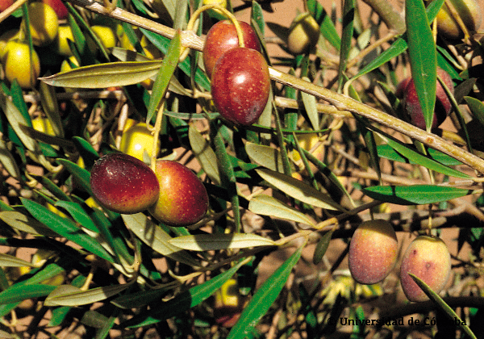

VARIEDADES DE ACEITUNA
En España se cultivan más de 200 variedades de aceituna. Cada una de ellas aporta sabores y aromas únicos.
Diferentes tipos de aceitunas que dan lugar distintas variedades de aceite de oliva virgen extra
España atesoramos un rico patrimonio que nos ofrece unas inmensas posibilidades en la cocina, algunas de las
variedades más conocidas son:
- Bical
- Hojiblanca
- Picual
- Cornicabra
- Morisca
- Castellana
- Villalonga
- Arbequina
- Manzanilla
- Gordal
Cada tipo de aceituna atorga a sus aceites un sabor y aromas característicos.
¿Cómo encontramos en el mercado esas variedades?
Desde hace unos años es muy común encontrar en el mercado aceites de oliva virgen extra con indicación de la
variedad de la que proceden. En el caso de aquellos en los que interviene una única variedad de aceituna, se
denominan monovarietales. Si, por el contrario, contiene más de una se suelen denominar coupages. En este caso,
con la mezcla de dos o más variedades se trata de obtener un aroma y sabor único, que se beneficia de los
matices que le aporta cada tipo de aceituna.
___________________________________________________________________________________________________________________________________________________________
ARBEQUINA
Es la variedad característica de Cataluña (Tarragona y Lérida) y del Alto Aragón, aunque su cultivo se
ha extendido a prácticamente todo el país. Toma su nombre de la localidad leridana de Arbeca.
Da un aceite muy fluido, dulce y en el que casi no se perciben sabores amargos o picantes. Su aceite de
oliva presenta un aroma frutado de aceituna, manzana, plátano y almendra.
HOJIBLANCA
Su cultivo se extiende fundamentalmente por las provincias de Málaga, Córdoba, Granada y Sevilla. Su
nombre
hace referencia al color blanquecino de las hojas. Esta variedad tiene la particularidad de que se usa
tanto para la obtención de aceite como para su uso como aceituna de mesa.
Se caracteriza por su sabor y aroma a hierba recién cortada, alcachofa y plantas aromáticas. Su entrada
en boca es dulce, con un amargor ligero y un picor final muy localizado en la boca.
___________________________________________________________________________________________________________________________________________________________
CORNICABRA
Este tipo de aceituna constituye la segunda variedad española en cuanto a superficie cultivada. Se encuentra
fundamentalmente en las provincias de Toledo, Ciudad Real y Madrid, aunque también se cultiva en las
provincias de Cáceres y Badajoz. Su nombre hace referencia a la forma curvada del fruto que recuerda al
cuerno de la cabra.
Sus aceites de oliva virgen extra son muy aromáticos, con frutado de aceituna y otras frutas entre las
que destaca la manzana. En boca se aprecian notas herbáceas de hoja de olivo, con un ligero sabor amargo.
PICUAL
Es la variedad más abundante de España y del mundo, existiendo en la actualidad unas de 900.000
hectáreas de
superficie de producción en nuestro país que se encuentran principalmente en Jaén, Córdoba y Granada,
aunquesu cultivo se ha extendido a otras zonas productoras como Castilla-La Mancha. Su nombre hace referencia
a la forma de pico que muestra el fruto.
Su aceite es muy apreciado por su alta estabilidad (resistencia a la oxidación), lo que le confiere una gran
resistencia a las altas temperaturas en la cocina y es idóneo para la conservación de alimentos crudos o
cocinados.
Sensorialmente son aceites de gran personalidad, con mucho cuerpo y con frutado de aceituna verde,
apreciándose en el sabor la hoja de olivo, un ligero picor y amargor.
___________________________________________________________________________________________________________________________________________________________
CASTELLANA

Variedad originaria de Castilla-La Mancha, Comunidad de la que parece que ha heredado su nombre. Se cultiva
fundamentalmente en las provincias de Guadalajara, Cuenca y Madrid. Es la única variedad aceptada en la
elaboración de los aceites de oliva virgen extra de la Denominación de Origen Aceite de la Alcarria. Los
aceites de esta variedad son frutados y muy aromáticos, con un picor característico. Destacan también
por las notas verdes de hierba y hoja, así como a plátano.
VILLALONGA
Esta es, sin lugar a dudas, una de las variedades de aceituna más famosa del mundo. La gordal sevillana
se emplea fundamentalmente en la elaboración de aceituna de mesa, en donde destaca por su gran tamaño, que
la diferencia del resto de variedades. Se cultiva fundamentalmente en Sevilla, aunque se ha extendido con
éxitoa otras zonas del país. No se suele emplear para la elaboración de aceite ya que su rendimiento graso es
muy bajo.
___________________________________________________________________________________________________________________________________________________________